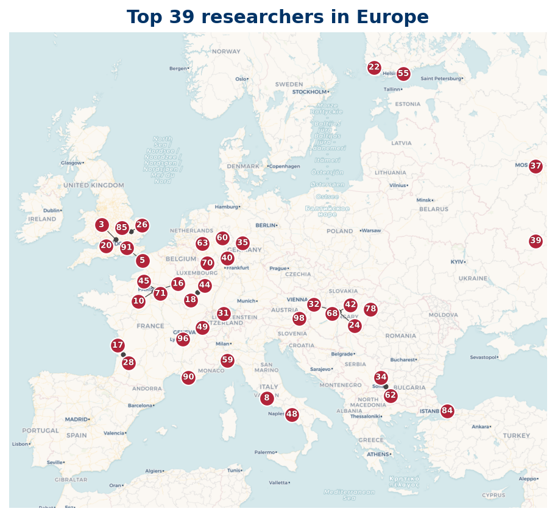

31 researchers are based in Europe; 30 researchers mapped, 1 researcher location not available (institution geocode pending).
Listing
| Rank | Name | Institution | Country |
|---|---|---|---|
| 1 | Iwaniec, Henryk | Polish Academy of Sciences | PL |
| 5 | Heath-Brown, D. R. | University of Oxford | GB |
| 8 | Harman, Glyn | Royal Holloway University of London | GB |
| 13 | Motohashi, Y. | Finnish Academy of Science and Letters | FI |
| 16 | Ercan Altınışık | Gazi University | TR |
| 17 | Fouvry, Etienne | Centre National de la Recherche Scientifique | FR |
| 18 | Murat Demirbüken | Bilkent University | TR |
| 19 | Efthymios Sofos | University of Glasgow | GB |
| 22 | Pintz, J. | Alfréd Rényi Institute of Mathematics | HU |
| 26 | Wu, Jie | Institut Elie Cartan de Lorraine, CNRS | FR |
| 30 | Tenenbaum, Gérald | Institut Élie Cartan de Lorraine | FR |
| 34 | Maynard, James | University of Oxford | GB |
| 35 | Ramaré, Olivier | Château Gombert | FR |
| 37 | Greaves, George | University of Wales | GB |
| 38 | Matomäki, Kaisa | University of Turku | FI |
| 40 | Sárközy, A. | Eötvös Loránd University | HU |
| 44 | Deshouillers, Jean-Marc | Centre National de la Recherche Scientifique | FR |
| 46 | Elsholtz, Christian | Graz University of Technology | AT |
| 50 | Brüdern, J. | University of Göttingen | DE |
| 54 | Tolev, D. I. | Sofia University "St. Kliment Ohridski" | BG |
| 59 | Konyagin, Sergey | Steklov Mathematical Institute | RU |
| 60 | Browning, T. D. | Institute of Science and Technology Austria | AT |
| 67 | Balog, A. | Baltazar Zaprešić University of Applied Sciences | HR |
| 70 | Dartyge, Cécile | Université de Lorraine | FR |
| 71 | Helfgott, H. A. | Université Paris Cité | FR |
| 75 | Yıldırım, C. Y. | Boğaziçi University | TR |
| 80 | Coppola, Giovanni | University of Salerno | IT |
| 86 | Merikoski, Jori | University of Oxford | GB |
| 93 | Teräväinen, Joni | University of Cambridge | GB |
| 94 | Blomer, Valentin | Gesellschaft Fur Mathematik Und Datenverarbeitung | DE |
| 97 | Schlage-Puchta, Jan-Christoph | University of Rostock | DE |